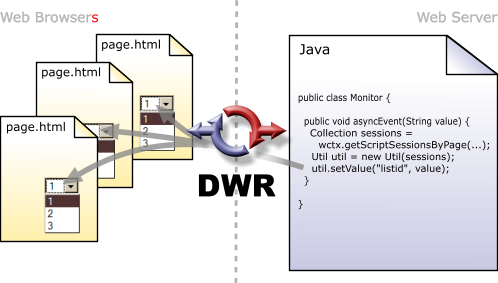

DWR is a RPC library which makes it easy to call Java functions from JavaScript and to call JavaScript functions from Java (a.k.a Reverse Ajax).
It has a large user-base, active mailing list and has been used in many projects including the Walmart shopping site and American Airlines flight booking site.
DWR has a number of features like call batching, marshalling of virtually any data-structure between Java and Javascript (including binary file uploading and downloading), exception handling, advanced CSRF protection and deep integration with several Java server-side technologies like Spring and Guice.
The first diagram shows how DWR can alter the contents of a selection list as a result of some Javascript event.
Reverse Ajax (available since DWR version 2.0) allows Java code running on the server to find out what clients are viewing certain pages, and to send to them JavaScript, generated either manually or using a Java API. These JavaScript generating APIs generally match a client-side APIs.

DWR consists of two main parts:
DWR works by dynamically generating Javascript based on Java classes. The code does some Ajax magic to make it feel like the execution is happening on the browser, but in reality the server is executing the code and DWR is marshalling the data back and forwards.
This method of remoting functions from Java to JavaScript gives DWR users a feel much like conventional RPC mechanisms like RMI or SOAP, with the benefit that it runs over the web without requiring web-browser plug-ins.
The DWR project is developing a method of automatically creating Java versions of JavaScript APIs which developers can use to control browsers from the server. A server-side version of the TIBCO GI library is currently in alpha release, and the DWR project aims to expand this to cover other client side APIs including the Dojo Toolkit, JQuery, YUI, Ext and others.
For details on how to get started with DWR see the getting started guide and download instructions.